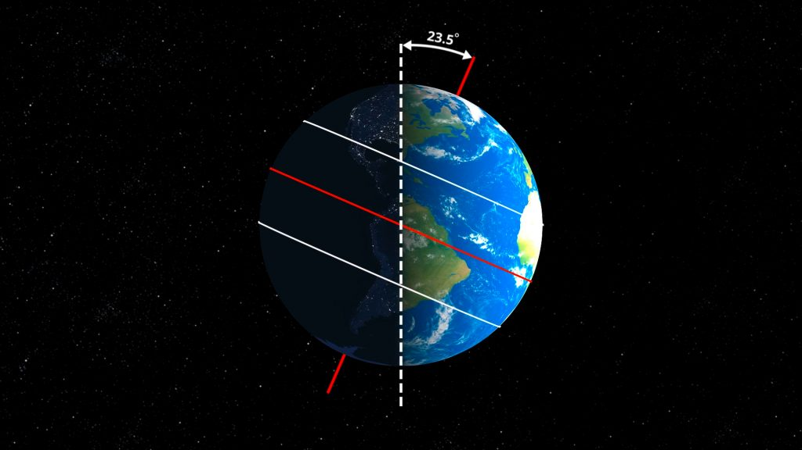
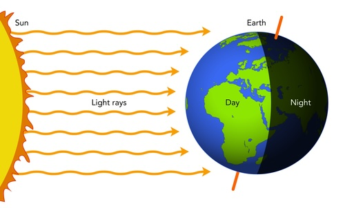
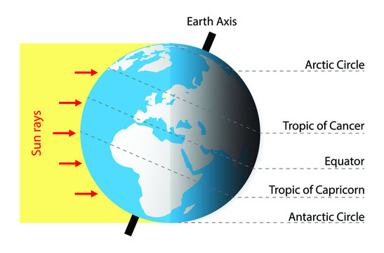
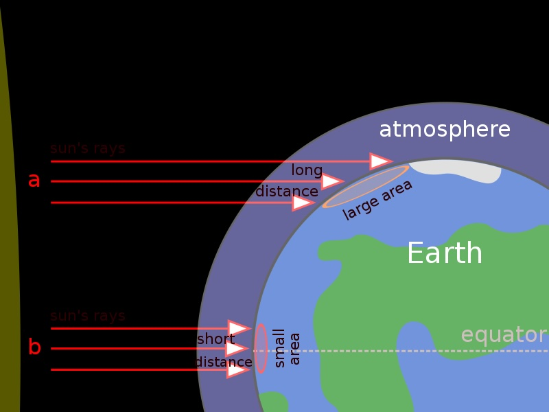
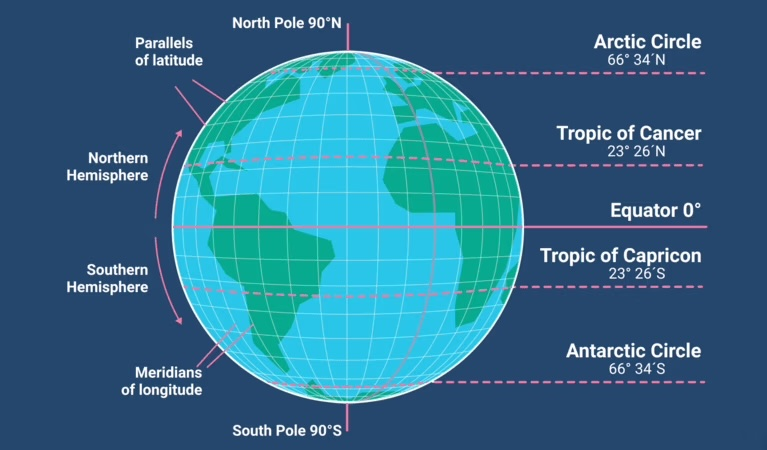
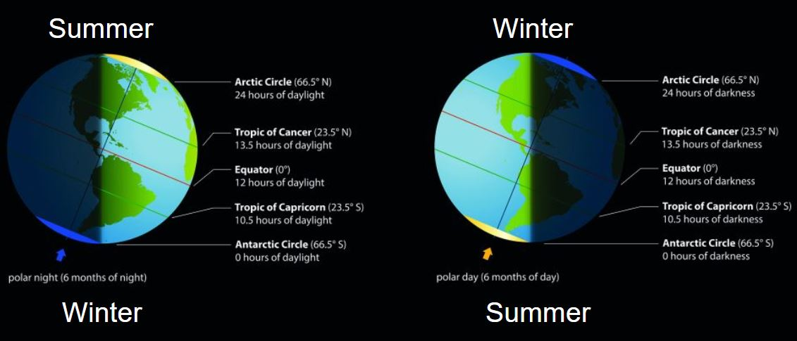
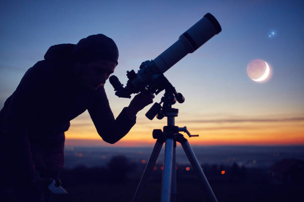

Earth's Seasons: The Cosmic Dance of Light and Tilt
The four divisions of the year (spring, summer, fall and winter) are marked by distinct weather patterns and variations in daylight hours across different regions of our planet. But what causes these seasonal changes? In this lesson, we'll explore how Earth's position in space and its unique characteristics create the rhythm of seasons that shape our lives.
The Primary Cause of Seasons: Earth's Tilt
Contrary to popular belief, Earth's distance from the Sun is not the main cause of seasons. The primary cause is Earth's tilt of axis.

Earth's axis is tilted at precisely 23.5° relative to its orbital plane around the Sun
Earth's Axis and Its Tilt
Earth spins around its axis once every 24 hours. The axis is an imaginary line that runs through the center of Earth from the North Pole to the South Pole. This axis is tilted at an angle of 23.5° relative to the plane of Earth's orbit around the Sun.
This tilt remains pointed in the same direction in space throughout the year, but its orientation relative to the Sun changes as Earth orbits around our star.
Fun Fact!
If Earth had no axial tilt (0°), we would have no seasons! Each location would experience the same amount of sunlight and darkness every day of the year.
How Tilt Creates Seasons
As Earth orbits the Sun, its tilted axis causes different parts of the planet to receive varying amounts of solar radiation throughout the year:

The illumination of Earth creates day and night as our planet rotates, but the tilt causes varying day lengths throughout the year
- June (Summer Solstice in Northern Hemisphere): The Northern Hemisphere and North Pole point toward the Sun. This hemisphere receives more direct sunlight and experiences summer.
- December (Winter Solstice in Northern Hemisphere): The Southern Hemisphere and South Pole point toward the Sun. This hemisphere receives more direct sunlight and experiences summer, while the Northern Hemisphere experiences winter.

Earth's axial tilt affects how sunlight is distributed across different latitudes throughout the year
Key Concept: Opposite Seasons
When the Northern Hemisphere experiences summer, the Southern Hemisphere experiences winter, and vice versa. This is because when one hemisphere is tilted toward the Sun, the other is necessarily tilted away.
Light Intensity and Seasons
Light is a form of energy that travels through space. The amount of solar energy reaching Earth's surface depends on the angle at which sunlight strikes the surface.

The angle at which sunlight strikes Earth affects its intensity and how much energy is absorbed
How Angle Affects Light Intensity
When sunlight hits Earth's surface at a 90° angle (directly overhead), it is most intense and transfers the maximum amount of energy. This is called direct sunlight.
When sunlight hits at a smaller angle, the same amount of energy is spread over a larger area, resulting in less intense heating. This is called indirect sunlight.
Think About It:
During summer in the Northern Hemisphere, sunlight strikes the surface more directly (at angles closer to 90°). This concentrates solar energy into a smaller area, creating higher temperatures.
During winter in the Northern Hemisphere, sunlight strikes the surface at smaller angles, spreading the same amount of solar energy over a larger area and resulting in lower temperatures.
Latitude: Earth's Horizontal Bands
Latitude refers to the angular distance north or south of the equator, measured in degrees. The equator is at 0° latitude and divides Earth into the Northern and Southern Hemispheres.

Earth's major latitude lines include the Equator (0°), Tropic of Cancer (23.5°N), Tropic of Capricorn (23.5°S), Arctic Circle (66.5°N), and Antarctic Circle (66.5°S)
Important Lines of Latitude
- Equator (0°): Divides Earth into Northern and Southern Hemispheres
- Tropic of Cancer (23.5°N): The northernmost latitude where the Sun can appear directly overhead (at the June solstice)
- Tropic of Capricorn (23.5°S): The southernmost latitude where the Sun can appear directly overhead (at the December solstice)
- Arctic Circle (66.5°N): Defines the southernmost point in the Northern Hemisphere where the Sun can remain above or below the horizon for 24 continuous hours
- Antarctic Circle (66.5°S): Defines the northernmost point in the Southern Hemisphere where the Sun can remain above or below the horizon for 24 continuous hours
Connection Alert!
Notice that the Tropic of Cancer and Tropic of Capricorn are located at 23.5° north and south of the equator—the same as Earth's axial tilt of 23.5°. This is not a coincidence! These lines mark where the Sun appears directly overhead during the solstices because of Earth's tilt.
Daylight Hours and Seasons
The number of daylight hours a location receives varies throughout the year, except at the equator.

The distribution of daylight hours varies significantly by latitude and season
Daylight Patterns Across Earth
- At the equator: Approximately 12 hours of daylight year-round
- Between the equator and poles: Varying daylight hours depending on season and latitude
- At the poles: Extreme variations, including 24 hours of daylight during summer and 0 hours during winter
Why does the North Pole experience 24 hours of daylight during the peak of summer?
Because Earth's axial tilt causes the North Pole to be constantly facing the Sun during the Northern Hemisphere's summer. As Earth rotates on its axis, the North Pole remains in sunlight throughout the full 24-hour rotation period.
Latitude and Seasonal Extremes
The further you travel from the equator (north or south), the more extreme the seasonal differences become.
| Region |
Seasonal Temperature Variation |
Seasonal Daylight Variation |
| Equatorial (0°) |
Minimal (warm year-round) |
Minimal (~12 hours year-round) |
| Mid-latitudes (23.5°-66.5°) |
Moderate to significant |
Moderate |
| Polar (66.5°-90°) |
Extreme |
Extreme (from 24 hours to 0 hours) |
Compare and Contrast:
A city at 10° latitude will experience much less seasonal variation in temperature and daylight hours than a city at 60° latitude. The city at 60° latitude will have much longer summer days and much shorter winter days.
Common Misconception: Earth's Distance from the Sun
Many people incorrectly believe that seasons occur because Earth's distance from the Sun changes throughout the year.
Earth's Orbit
Earth's orbit around the Sun is nearly circular. While Earth's distance from the Sun does vary slightly during its orbit (it's closest to the Sun in January and farthest in July), this has a minimal effect on temperatures compared to the effect of axial tilt.
In fact, the Northern Hemisphere experiences winter when Earth is actually closest to the Sun! This clearly shows that Earth's distance from the Sun is not the primary cause of seasons.
Seasons on Other Planets
Studying seasons on other planets helps us better understand the factors that create seasons.
| Planet |
Axial Tilt |
Seasonal Effects |
| Mercury |
Almost 0° |
No seasons from axial tilt, but temperature varies due to its highly elliptical orbit |
| Venus |
3° |
Minimal seasonal variation due to small tilt |
| Earth |
23.5° |
Distinct four seasons in mid-latitudes |
| Mars |
25° |
Seasons similar to Earth but longer (Mars takes about twice as long to orbit the Sun) |
Planetary Comparison
Mars has an axial tilt (25°) most similar to Earth's (23.5°), which gives it seasons most like those on Earth. However, because Mars takes nearly twice as long to orbit the Sun, its seasons last about twice as long as Earth's.
What If Earth's Tilt Changed?
What would happen if Earth's axis were tilted at 0° instead of 23.5°?
If Earth had no axial tilt:
- There would be no seasons as we know them
- Each location would receive the same amount of sunlight every day of the year
- The equator would still be warmest, and the poles coldest, but these temperatures would remain constant year-round
- Every day would have equal hours of daylight and darkness (12 hours each)
What if Earth's axis were tilted more than 23.5°?
A greater axial tilt would result in more extreme seasons, with hotter summers and colder winters. The regions experiencing midnight sun and polar night would extend further from the poles.
Astronomers: The Scientists Who Study Seasons in Space
Astronomers are scientists who study celestial objects, including planets and their behaviors. Planetary astronomers specifically focus on planets in our solar system and beyond.
These scientists use sophisticated equipment like telescopes, satellites, and computer models to study how different planets experience seasons based on their tilt, orbit, and other factors.

Astronomers use observatories and specialized instruments to study celestial phenomena, including planetary rotations and orbits
What Astronomers Have Discovered About Seasons
Planetary astronomers have found that each planet in our solar system experiences different seasonal patterns:
- Mercury has virtually no axial tilt, so it doesn't experience seasons from tilt. However, its highly elliptical orbit causes temperature variations as its distance from the Sun changes significantly.
- Venus has a very slight tilt of only 3°, resulting in minimal seasonal variation.
- Mars, with its 25° tilt (similar to Earth's 23.5°), experiences seasons comparable to Earth's, but they last longer because Mars takes nearly twice as long to orbit the Sun.
These comparative studies help astronomers better understand the unique factors that create Earth's seasonal patterns.
Putting It All Together: The Seasonal Cycle
The Four Key Factors of Seasonal Change:
- Earth's 23.5° tilt - The fundamental cause of seasons
- Earth's orbit around the Sun - Changes which hemisphere is tilted toward the Sun
- Light intensity - Direct sunlight (90° angle) provides more energy than indirect sunlight
- Latitude - Determines the angle of sunlight and variations in daylight hours
Key Vocabulary
| Term |
Definition |
| Season |
Four divisions of the year (spring, summer, fall, and winter) marked by weather patterns and daylight hours |
| Earth's orbit |
An almost circular, repeating path around the Sun |
| Earth's axis |
An imaginary line around which Earth rotates, connecting the North and South Poles |
| Axial tilt |
The 23.5° angle of Earth's axis relative to its orbital plane |
| Equator |
The imaginary line of latitude that divides Earth into two equal hemispheres |
| Latitude |
Imaginary lines that run east-west, measuring distance north or south of the equator |
| Solstice |
The day when the Sun reaches its highest or lowest point in the sky, resulting in the longest or shortest day of the year |
| Direct sunlight |
Sunlight hitting a surface at or near a 90° angle, transferring maximum energy |
| Indirect sunlight |
Sunlight hitting a surface at a small angle, spreading energy over a larger area |
| Temperature |
A measure of how cold or hot something is |
Final Check for Understanding
Analyzing Earth's Position:
When the North Pole is tilted toward the Sun:
- The Northern Hemisphere experiences summer
- The Southern Hemisphere experiences winter
- Locations in the Northern Hemisphere receive more direct sunlight
- Locations in the Northern Hemisphere have longer daylight hours
Comparing Latitude and Seasonal Experience:
During summer in the Northern Hemisphere:
- The North Pole has 24 hours of daylight
- New York City (40°N) has about 15 hours of daylight
- The equator (0°) has about 12 hours of daylight
- Buenos Aires (34°S) has about 10 hours of daylight (it's winter there)
- The South Pole has 0 hours of daylight
Remember:
The primary cause of seasons is Earth's 23.5° tilt on its axis as it orbits the Sun. This tilt causes different parts of Earth to receive varying amounts of direct sunlight throughout the year, creating the cycle of seasons we experience.